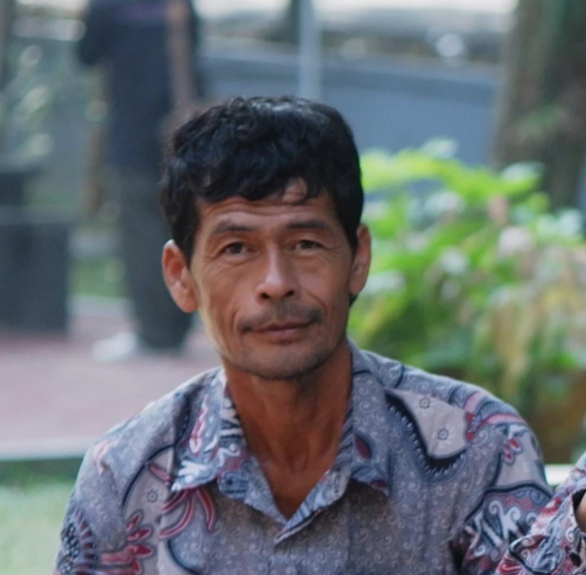
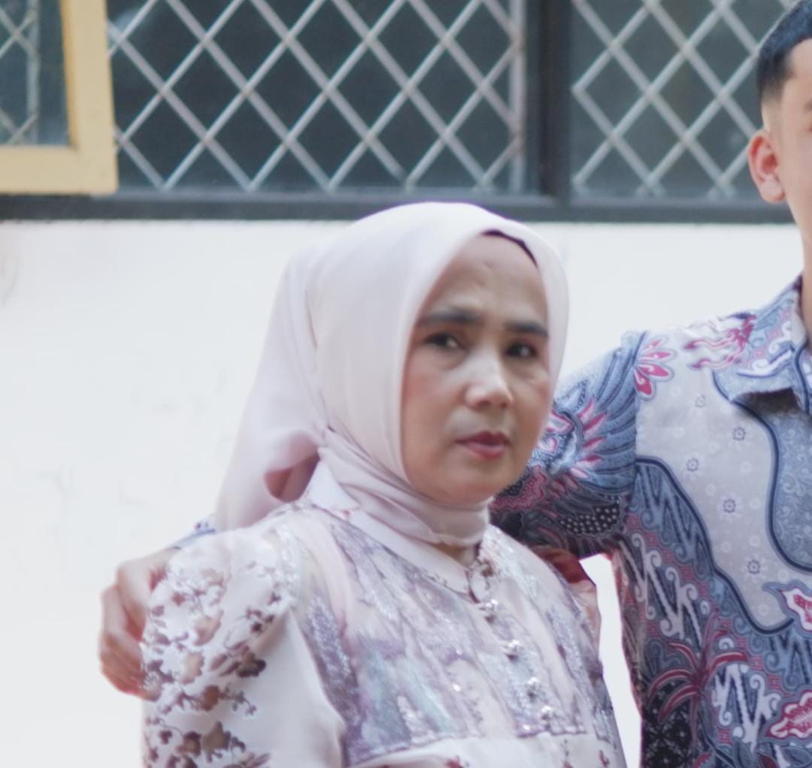

Ayah
| Nama | : Ebo Bohari |
| Jenis Kelamin | : Laki-Laki |
| Alamat | : Lingk. Aton, RT.10/RW.05, Kel. Cijoho, Kec. Kuningan |
| Pekerjaan | : Buruh/Petani |
| Agama | : Islam |
| Status | : Sudah Menikah |
| Kewarganegaraan | : WNI |
| Umur | : 52 tahun |

Ibu
| Nama | : Nining Sumarni |
| Jenis Kelamin | : Wanita |
| Alamat | : Lingk. Aton, RT.10/RW.05, Kel. Cijoho, Kec. Kuningan |
| Pekerjaan | : Ibu Rumah Tangga |
| Agama | : Islam |
| Status | : Sudah Menikah |
| Kewarganegaraan | : WNI |
| Umur | : 48 tahun |

Anak Pertama
| Nama | : Ati Nur Sari |
| Jenis Kelamin | : Wanita |
| Alamat | : Lingk. Aton, RT.10/RW.05, Kel. Cijoho, Kec. Kuningan |
| Agama | : Islam |
| Status | : Sudah Menikah |
| Kewarganegaraan | : WNI |
| Umur | : 26 tahun |

Anak Kedua
| Nama | : Pani Puja Yanti |
| Jenis Kelamin | : Wanita |
| Alamat | : Lingk. Aton, RT.10/RW.05, Kel. Cijoho, Kec. Kuningan |
| Agama | : Islam |
| Status | : Belum Menikah |
| Kewarganegaraan | : WNI |
| Umur | : 21 tahun |

Anak Ketiga
| Nama | : Robi Nur Jaman |
| Jenis Kelamin | : Laki-Laki |
| Alamat | : Lingk. Aton, RT.10/RW.05, Kel. Cijoho, Kec. Kuningan |
| Agama | : Islam |
| Status | : Belum Menikah |
| Kewarganegaraan | : WNI |
| Umur | : 19 tahun |